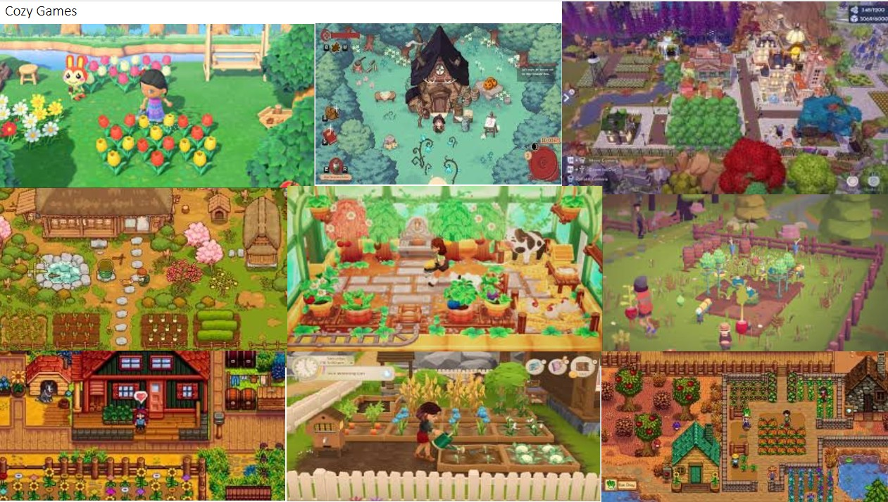

Rationale
Throughout starting the course i was able to reinforce my knowledge in coding and creating mechanics to use within my games that will help with my FMP. In the First Project 2D Platformer it helped refresh my knowledge on how to create multiple different mechanics for example i coded a jetpack into the game where i had to change jump height and gravity to achieve the feel and look of how a jetpack works.
Secondly during the Game Jam I had to work in a team of 2 and create a game that lasts 12 seconds during this project i relearnt how to create a dropping mechanic as well as create local multiplayer and be able to have both players see each other move and drop items and have the game be correct on both clients, I also messed around with the particle system to create a snow fall to add a Christmas affect.
Thirdly during the Escape Room Project i taught myself how to create a hang man game. This was difficult to do even though I didn't use it for the final Escape Room I learnt how to debug a lot more quickly and figure out how hang man functions and plays. Instead, I created a very basic Escape Room Horror where the player was trapped inside a house and had to complete basic puzzles to escape.
Cozy Game Planning
For the concept for my FMP project, I want to create a 3D Third Person Cozy Game where you play as a male character who wears a mushroom hat who can master different elements for example wind this would allow the player to be able to move quicker and fly around with limited stamina. The player will be able to farm and plant different crops as well as build their own house and repair broken structures, for example fixing the broken bridge to get across the river.
The game environment will consist of multiple floating islands that have different quests. This links back to my research where in Stardew Valley players can speak to NPCs to gain quests to help build relationships and unlock new areas. The player will be able to get upgrades like in Stardew Valley where the player can upgrade their storage or energy, each island will teach the player how to master each element to their fullest protentional while still letting the player progress at their own pace as well as create as little or as big structures or farms as they like.
The audio design will be like how Stardew Valley has with all the sounds with ambience being soft, calming and stress free. The game will have both keyboard and mouse as well as controller support for those who don't enjoy playing on a keyboard and mouse. For the visual aspect of my game, I want to keep it low poly as it's a lot easier to create a small demo with cozy visuals if I use low poly models as well as for all the UI, I'm going to be using pixel art to create all 2D assets needed for this game. This is similar to my research on Stardew Valley where the whole game design is levelled around low poly pixel art for visuals and UI.

The first mood board reflects the nostalgic, cozy atmosphere of Stardew Valley, where it uses a soft pixel art with earthy tones to evoke a sense of peace and simplicity. The visuals focus on the nature, farming and the small town. This mood board helps show the emotional connection players will have with the world. The moodboard also shows multiple different seasons and how that affects how the world looks and feels. The second mood board showcases the type of visuals world builders can have, showing the creativity and scale the player has control of. With diverse and vivid color schemes. The images in the moodboard shows the different types of art style going for AAA to low poly with different shapes like city building or actual world building.
Project Action Plan and Timetable
| Week | Date Week Beginning | Activity / What You Intend to Do (Including Independent Study) |
Resources / What You Will Need (Including Access to Resources) |
|---|---|---|---|
| 1 | 25/02/2025 | Planning and Research. Use websites and YouTube to find information about different cozy games. | Websites, YouTube |
| 2 | 04/03/2025 | Create the world building system and the first island. | Unreal Engine 5, Blender |
| 3 | 11/03/2025 | Create a first-person character, a way to switch between characters, and add an ocean with a boat the player can drive. | Unreal Engine 5, Blender |
| 4 | 25/03/2025 | Create the final version of the building system UI. | Pixel art software, Unreal Engine |
| 5 | 01/04/2025 | Work on creating the NPC quests for the player. | Blender, Unreal Engine |
| 6 | 08/04/2025 | Create the inventory system so the player can pick up and store items. | Unreal Engine, Pixel art |
| 7 | 15/04/2025 | Add player building and farming mechanics. | Blender, Unreal Engine |
| 8 | 22/04/2025 | Add all the audio into the game to create the desired feel. | Pixabay, Custom recorded audio |
| 9 | 29/04/2025 | Create the main menu and pause menus. | Unreal Engine, Pixel art |
I decided to use prioritization boards and a rank order board to create a clear and structured approach to show the development of my cozy game. This method will help me identify which features are essential and unnecessary, allowing me to focus on creating the core gameplay for example the games interactions and level designs. The rank order board shows the visual sorting of tasks based on importance.
Prop Hunt Planning
| Week | Date Week Beginning | Activity / What You Intend to Do (Including Independent Study) |
Resources / What You Will Need (Including Access to Resources) |
|---|---|---|---|
| 1 | 25/02/2025 | Planning and Research. Use websites and YouTube to find information about different prop hunt games. | Websites, YouTube |
| 2 | 04/03/2025 | Create the prop characters and create basic movement. | Unreal Engine 5, Blender |
| 3 | 11/03/2025 | Allow the props to be able to transform and the hunters to attack. | Unreal Engine 5, Blender |
| 4 | 25/03/2025 | Create the multiplayer system with replication. | Unreal Engine |
| 5 | 01/04/2025 | Work UI to show the game loop | Unreal Engine |
| 6 | 08/04/2025 | Add Audio for the props and hunters | Unreal Engine, Pixabay |
| 7 | 15/04/2025 | Code the setting players to get choosen to either be a hunter or a prop | Unreal Engine |
| 8 | 22/04/2025 | Add all the audio into the game to create the desired feel. | Pixabay, Custom recorded audio |
| 9 | 29/04/2025 | Create the main menu. | Unreal Engine |
The core game concept is to create a fun multiplayer hide and seek prop hunt game, where players get divide into two teams props and hunters. The props must disguise themselves as objects inside of the games hub to blend in and avoid detection. The hunters must travel round the map and try to identify the fake objects and find all the props that are hiding to win the game.
During my research I decided to create the games hub as the map for my game as it allows for there to be multiple hiding spots and objects to disguise as. The core game mechanics I need in my game would be third person movement, disguising as a prop and shooting at the props. The audio for my game will be very minimal with just basic sounds like quiet and loud movement sounds for props and hunters allowing for props to be stealthy. The hunters will also have sounds when they attack as well as props create a sound when they become a prop or taunt the hunters.

These mood board show the visuals that prop hunt games use for example games like witch it and run prop run as show in my mood board uses a low poly fantasy style with vibrant colours and magical environments like show in my research witch it uses this approach to create a game that uses vibrant props and magical levels. Where games like Call of duty prop hunt is my advanced graphics but still following the same sort of visual style where players are props to hide.
Using my research i was able to gather images from loads of different prop hunt games and added it to my mood boards to be able to showcase the different types of visuals a prop hunt game can have and how they vary to other games inside the same game genre going from low poly to high poly games.
Moscow Boards and Trello board
I decided to use a MosCow Rank board and a trello board to create a clear and structured approach to show the development of my multiplayer prop hunt. This method will help me identify which features are more important and less important, allowing me to focus on creating the core gameplay for example the games interactions and level designs. The rank order board shows the visual sorting of tasks based on importance as well as the trello board shows all the features I need to create and add into the game for it to work correctly.
During the whole FMP I'm going to be making weekly devlogs and filling in my reflective log as well as doing an evaluation at the end of the project where i reflect on how my product, planning and research came along and how I could of improved and done better and what went well and what I learnt during the FMP. <